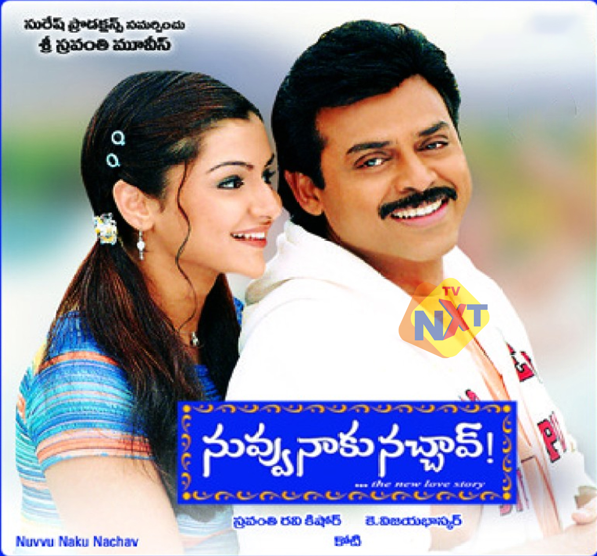

I am Bhargav, graduated from SR Engineering college, Warangal, Telangana, India. And statred working as Auto cad Engineer, but gradually developed my interest into computer science and applied for Masters in Computer Science.
Venky is an unemployed graduate from Anakapalli. He moves to Hyderabad to find a job on his father Sekharam's insistence. He arrives at his father's childhood friend, Srinivasa Moorthy's house to stay there. Meanwhile, Moorthy's daughter Nandu is engaged to Prasad, a software professional from the US. Venky helps the family in making arrangements and soon bonds with everyone. He also has petty fights with Nandu who start their relationship with hatred that later turns into a friendship. At the request of Sekharam, Murthy helps Venky in securing a job. Moorthy's sister Sujatha also arrives at their house. She shares a special bond with her niece Nandu and talks about the importance of marriage and finding a loving partner.
